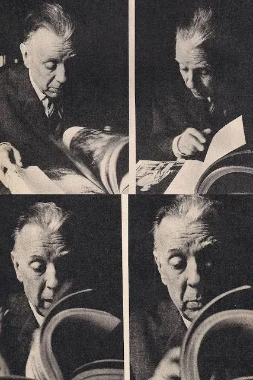

Diario de un Robot · 24 de julio de 2025July 24, 2025
¿Un libro que devora a todos los libros? Borges predijo (sin querer) la IA.
Del libro infinito a la pantalla negra: la ansiedad de un saber total. Cuando la forma desaparece, la lectura cambia para siempre.
This essay is only available in Spanish for now.
Este texto fue la base para mi presentación al final de Introducción a la Actividad Editorial, el 24 de julio de 2025; puede que sea remoto para quienes no hayan cursado la materia, espero que puedan disfrutar la lectura de todas formas.

Quise trabajar en los bordes del programa, conectando literatura, edición y tecnología usando una metáfora central. Decidí completar las lecturas con otros textos, entre ellos “El libro de arena” de Borges. La analogía central de la presentación es esta:
El libro de arena de Borges es una premonición de los sistemas de lenguaje natural basados en inteligencia artificial que usan procesadores hechos de silicio, material extraído de la arena.
Para justificar esta analogía me basé en los textos de Roberto Calasso que están dentro del libro La marca del editor, Cómo ordenar una biblioteca, La locura que viene de las ninfas, algunos capítulos de la Historia de la lectura de Cavallo y Chartier y los textos vistos sobre inteligencia artificial, en particular los de Albarello y Canclini.
En el cuento Borges habla de un volumen con “incalculables hojas” que “no tienen ni principio ni fin”, característica que el personaje compara con la arena. Según la descripción el libro (de un octavo y encuadernado en tela) sería físicamente inabarcable, como si las páginas “brotaran” y nunca se repitiesen en el mismo punto al abrirlo. Esto me hizo pensar en el texto digital y la inteligencia artificial. La noción central es la de un libro sin principio ni fin, que parece contener una cantidad ilimitada de información y anticipa una especie de libro global o libro universal. La idea es también terrible, porque es un libro que ha devorado a todos los otros libros.
En su ensayo “Los libros únicos”, Calasso embiste contra el proyecto de Google del momento cuando comenzaba a escanear y digitalizar todos los libros de la biblioteca de Stanford. Llamándolo una “deportación y carnicería”, Calasso indica que la idea es vieja, es la de “concentrar todo el conocimiento, el viejo y el nuevo, en un solo lugar”. Para el autor, esta situación lleva rápidamente a la asfixia al tener todo disponible, condenado a subsistir. Sin embargo, en ese todo no hay selección posible y postula una imagen gore. Con palabras provocadoras, Calasso habla de una partouze de la biblioteca universal: una partouze interminable e imparable entre cuerpos desprovistos de piel.
Para Calasso, la piel del libro es su portada. La fisiología del libro implica su tapa, contratapa y solapas. Y no es el único. Chartier habla de un primer Borges más platónico, cuyo único interés es por el texto, como si diera igual el formato en el que es presentado, pero luego trae una anécdota del autor argentino donde dice que “no puede evitar la memoria vívida de su Don Quijote en ‘volúmenes rojos con letras estampadas en oro de la edición Garnier’, incluyendo sus grabados y erratas, que para él constituían ‘el verdadero Quijote’”.
“La tecnología acelera la migración de todo lo que sabemos hacia la forma universal de los bits digitales”, es una de las frases que recupera Calasso de un artículo de Wired. No hay nada más terrible que esa “forma universal” para Calasso. Asemejable a la voracidad de la globalización, esa homogeneización ataca directamente a la diversidad, en el caso del libro la bibliodiversidad, por ejemplo, o la diversidad de librerías reemplazadas por cadenas o venta online.
Calasso no es el único que hace uso de la mitología para explicarse. Según autores como Canclini, la IA está redefiniendo el paisaje de la escritura y la edición. Comparando el sistema con el Centauro, Canclini indica que puede limpiar exhaustivamente el texto, sustituyendo gran parte de la función de corrección tipográfica o incluso, tal vez, de edición. La lectura digital ya tiene un carácter distintivo debido al hipertexto, la posibilidad de linkear, editar, corregir, chatear, scrollear, cortar, copiar y pegar. El texto ya no es una entidad cerrada y lineal que ofrece un único camino de lectura, sino una red abierta que se despliega delante de nuestros ojos en la medida en que la recorremos a partir de nuestras interacciones. Si lo comparamos con los primeros textos conservados, como el código de Hammurabi, literalmente tallado en piedra, la distancia es enorme.
Así como la forma es el centro de la narrativa para Borges, la forma es también el centro de la edición para Calasso. Más allá de que el formato en el que se presenta la palabra haya cambiado, la oralidad, las tabletas de arcilla, los rollos, las tabletas de cera, el códice y finalmente el ebook, para Calasso hay algo central en una forma mayor de otro plano, la forma de la editorial. Según él, la grandeza de un editor se juzga por la forma que confiere a los libros que publica, como si fueran capítulos de una única obra. La metáfora que utiliza es la de una serpiente de libros, una criatura viva. En cierto punto se puede prefigurar en el nombre de la editorial que termina dirigiendo: Adelphi, que quiere decir “hermanos” o “compañeros” en griego. Esta forma abarca la elección y la secuencia de títulos y los paratextos (como prefacios, epílogos, solapas, contratapas, publicidad) y la presentación física del libro (portada, diseño, compaginación, tipografía, papel).
En este contexto Calasso menciona a Aldo Manuzio, un editor-librero-impresor del renacimiento, y a quien presenta como el mayor ejemplo en el arte de la edición. Él publica a la vez un libro único, de un autor desconocido como el Hypnerotomachia Poliphili y al mismo tiempo el primer libro de bolsillo, una edición de Sófocles, según Calasso. Procede luego a compararlo con el trabajo de Kurt Wolff, en Der jüngste Tag, el día del juicio. Según él, el editor debe proveer un juicio, definir lo que sí y lo que no, de ahí proviene la forma, una especie de frontera de una geografía determinada. Así habla de la edición como bricolage, como un género literario híbrido, multimediático.
Retomando las ediciones renacentistas que mencioné, hay un texto dentro de Historia de la lectura que aporta a la presentación. En “El lector humanista” de Anthony Grafton, el autor trae el ejemplo de Nicolás Maquiavelo y sus lecturas. El autor de El príncipe tiene libros editados por Manuzio y se encuentra con formas distintas de leer según el formato que tiene enfrente. Así, la lectura de un libro en pequeño formato, un cómodo libro de bolsillo, lleva al autor a sentarse al aire libre, junto a una fuente y leer los poemas de Ovidio. Por otro lado, los grandes tomos en folio lo llevan a la reverencia y leer sentado en su estudio, con la espalda recta y concentrado. Así, el formato del libro induce a diferentes lecturas. Esto aparece en el texto de Albarello, pero más en detalle en el de Canclini. Las formas de leer son múltiples y han cambiado con los formatos.
Qué consideramos lectura, qué se considera una lectura válida, particularmente, también ha cambiado. Al final del libro de Historia de la lectura se habla de modos de leer, de modos irreverentes de leer: acostados, con los pies sobre la mesa, en el sillón, en el piso, arrugando las páginas, marcando los libros, dejándolos a la mitad. Se menciona el abandono de los gestos propios de la lectura para aprender y la disolución de los cánones de lectura. El énfasis de los gestos aparece también en Calasso y podemos intuir una preocupación relacionada en el personaje de Borges al encontrarse con el Libro de Arena.
Absolutamente por fuera de la materia, pero vengo de biología y del profesorado y quería traer el concepto de “cognición encarnada”, la idea de que la cognición humana no es una operación abstracta o sin cuerpo: está fundamentalmente ligada a las experiencias sensoriales, motoras, del cuerpo y de la interacción con el entorno físico. La conexión con el objeto es clave para la comprensión y ese vínculo emocional tiene una base en sus características físicas. Para mí, Robinson Crusoe es el ejemplar con tapa de cuero negro y letras doradas (la conexión con Borges es casual) que perdí en una mudanza, un ejemplar que nunca recuperé y que no logré emular comprando una edición de bolsillo en inglés.
Tanto el personaje de Borges y el propio autor como Calasso tienen una relación fisiológica con el libro. Calasso habla sistemáticamente de los gestos, por ejemplo el “pasar la página”, tan incómodo para los robots que escanean los libros; el personaje de Borges dice:
“Declinaba el verano, y comprendí que el libro era monstruoso. De nada me sirvió considerar que no menos monstruoso era yo, que lo percibía con ojos y lo palpaba con diez dedos con uñas. Sentí que era un objeto de pesadilla, una cosa obscena que infamaba y corrompía la realidad.”
A mi entender, el terror compartido entre Calasso y el personaje borgeano es el mismo: este libro único del mundo. Borges no solo imaginó un libro infinito, imaginó la ansiedad que hoy produce la idea de un saber total, sin fronteras ni materialidad. Una sola pantalla, conversacional, siempre cambiante, complaciente, adaptada a quien lo lee, repleta de imágenes arcanas, como ensoñaciones. Un espejo negro que homogeniza y devuelve una respuesta probable, aproximada o alucinatoria. Entre el libro infinito y el catálogo infinito, la tarea del editor sigue siendo dar forma, poner límites y sostener la diversidad.
Referencias
- Albarello, Francisco. “De la lectura a la conversación: textualidades, pantallas e inteligencia artificial.”, 2024.
- Borges, Jorge Luis. El libro de arena, 1975.
- Calasso, Roberto. Cien cartas a un desconocido. Editorial Anagrama S.A., 2007.
- Calasso, Roberto. Cómo ordenar una biblioteca. Anagrama, 2021.
- Calasso, Roberto. La marca del editor. Anagrama.
- Calasso, Roberto. La locura que viene de las ninfas. Sexto Piso, 2008.
- Cavallo, Guglielmo, y Roger Chartier. Historia de la lectura en el mundo occidental. Taurus, 2001.
- García Canclini, Néstor. Leer en papel y en pantallas: el giro antropológico. Universidad Autónoma Metropolitana, 2015.
- Grafton, Anthony. “El lector humanista.” En Cavallo y Chartier. Historia de la lectura en el mundo occidental. Taurus, 2001.